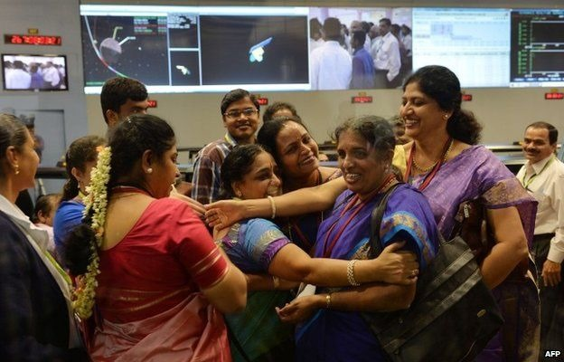

Mars Orbiter Mission
Mars Orbiter Mission (MOM), India's first interplanetary mission to planet Mars was launchedonboard PSLV-C25 on November 05, 2013. ISRO has become the fourth space agency to successfully send a spacecraft to Mars orbit.Though the designed mission life is 6 months, MOM completed 7 years in its orbit on Sept 24, 2021.
Mission Objectives
The objectives of this mission are primarily technological and include design, realisation and launch of a Mars Orbiter spacecraft capable of operating with sufficient autonomy during the journey phase; Mars orbit insertion / capture and in-orbit phase around Mars. MOM carries five scientific payloads to study the Martian surface features, morphology, mineralogy and Martian atmosphere.
Scientific Payloads
Mars continues to be an object of keen interest to scientists in the context of planetary evolution and extra-terrestrial life. Based on our understanding of Mars, which was thought to be probably a warm and wet planet earlier, is now seen to be dry with a thin atmosphere. How this evolution has taken place is still a topic of research. In this backdrop, the Indian Mars Orbiter Mission carried the following five scientific payloads:
- Mars Color Camera (MCC)
- Thermal Infrared Imaging Spectrometer (TIS)
- Methane Sensor for Mars (MSM)
- Mars Exospheric Neutral Composition Analyser (MENCA)
- Lyman Alpha Photometer (LAP)
Uniqueness
- Highly elliptical orbit geometry of MOM enables its Camera (MCC) to take snap shots of Full disc of Mars at its farthest point and finer details from closest point.
- First time observation of the far side of Deimos, one of the moons of Mars.
Achievements
- The Mars Colour Camera, one of the scientific payloads onboard MOM, has produced 1100+ images so far and published a Mars Atlas.
- Published more than 35 research papers in peer-reviewed journals.
- India’s ability to successfully realize the complex mission to Mars in its first attempt, in a cost-effective (Rupees 450 Cr) has captured the world attention and has propelled India’s image as a credible space fairing nation to greater heights. This capability could pave the way for greater opportunities for Space Commerce including launch services and marketing of Satellite Imageries.
- Mars Orbiter Mission is a mission of national pride which has attracted the attention of students, general public, media and international science/ technical community. Importantly, Mars Orbiter Mission has created enthusiasm among the younger generation in the country, provoked their curiosity to understand and discuss space related techniques and is maintaining the tempo throughout the mission.
Major science results
- The solar coronal dynamics during the post-maxima phase of the solar cycle 24 using S -band radio signals from the MOM (MNRAS, 2022)
- Enhanced escape of Martian atmosphere during global dust storm (JGR-Planets, 2020)
- MENCA detected 'hot' (suprathermal – more energetic compared to thermal) Argon in the exosphere of Mars (GRL, 2017). Mars was at perihelion during this observation.
- Mars Exospheric Neutral Composition Analyser(MENCA) observations have shown for the first time that the abundance of Oxygen exceeds that of Carbon-Dioxide at an altitude of ~270 ±10 km, during the perihelion evening hours (GRL, 2016).
- Atmospheric optical depth (AOD) was estimated through Mars Colour Camera (MCC) observations and the studies reported the presence of lee-wave clouds above the southern wall of Valles Marineris (Icarus, 2015)


